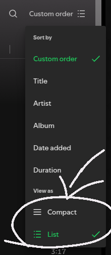
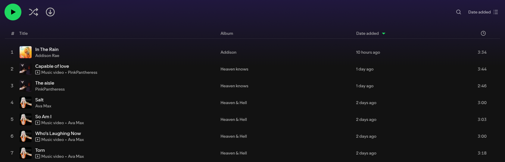
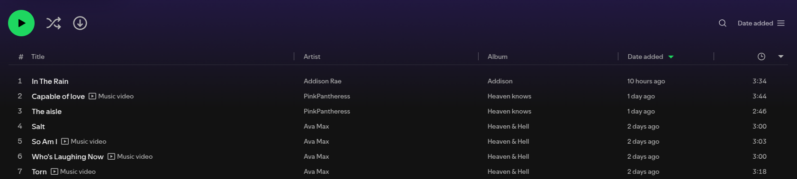
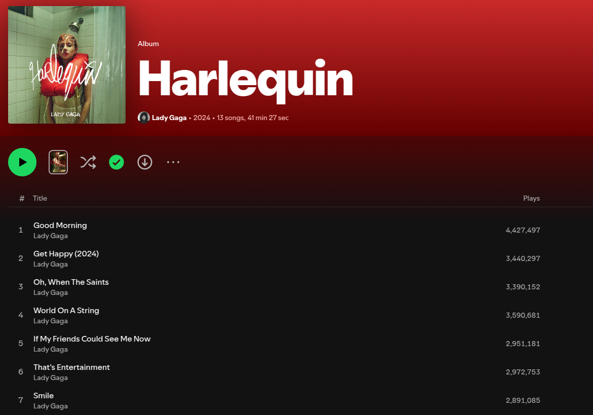

![](http://www.tumblr.com/share/link?url=https%3a%2f%2fbool3max.win%2fposts%2fspotify_ui_hacking%2f&name=Modifying%20the%20Spotify%20client%20to%20persist%20tracklist%20View%20style%20per%20playlists%20and%20albums&description=%3cp%3eThe%20web%20and%20desktop%20versions%20of%20the%20Spotify%20client%20provide%20two%20distinct%20ways%20of%20displaying%20track%20lists%20when%20viewing%20a%20resource%20such%20as%20a%20playlist%20or%20an%20album%3a%3c%2fp%3e%0a%3cul%3e%0a%3cli%3eCompact%3c%2fli%3e%0a%3cli%3eList%3c%2fli%3e%0a%3c%2ful%3e%0a%3cp%3e%3cimg%20src%3d%22imgs%2fctx_menu.png%22%20alt%3d%22context%20menu%22%3e%3c%2fp%3e%0a%3cp%3eThey%20differ%20primarily%20in%20the%20amount%20of%20padding%20and%20spacing%20between%20the%20individual%20rows%20representing%20tracks%2c%20with%20the%20%3cstrong%3eCompact%3c%2fstrong%3e%20mode%20also%20%3cem%3eomitting%0athe%20belonging%20album%26rsquo%3bs%20cover%20thumbnail%20to%20the%20left%20of%20each%20track%3c%2fem%3e%3a%3c%2fp%3e%0a%3cp%3e%3cimg%20src%3d%22imgs%2flist.png%22%20alt%3d%22list%22%3e%0a%3cimg%20src%3d%22imgs%2fcompact.png%22%20alt%3d%22list%22%3e%3c%2fp%3e%0a%3cp%3eAbove%20you%20can%20see%20the%20difference%20between%20the%20two%20modes.%3c%2fp%3e){kind=link}
Modifying the Spotify client to persist tracklist View style per playlists and albums
The web and desktop versions of the Spotify client provide two distinct ways of displaying track lists when viewing a resource such as a playlist or an album:
- Compact
- List

They differ primarily in the amount of padding and spacing between the individual rows representing tracks, with the Compact mode also omitting the belonging album’s cover thumbnail to the left of each track:
 
Above you can see the difference between the two modes.
While the Compact mode does allow you to fit a larger number of tracks onto the screen at a time, the List mode isn’t without its advantages: when viewing a mixed playlist with tracks from many different albums, having the belonging album’s cover art next to the song is instrumental in identifying it quickly! I believe this is because humans are really good at pattern recognition, and images, with all their shapes and colors, are just faster to differentiate than text.
In the comparison images above, try and notice just how much quicker it is to observe that the last four tracks all belong to the same album (and thus the same artist) in the List example compared to the Compact one - when using Compact mode you’d have to look at the ‘Album’ column, all the way over to the right.
When viewing an album tracklist in List mode, Spotify doesn’t even display the covert art - because why would you want to see the same image repeated multiple times one on top of another:

Not much point in using List mode when viewing albums. Makes sense. Plus when observing an individual album I really like seeing all the tracks on screen at once - it gives me a better idea of the tracklist.
Okay - so I should use List mode when viewing playlists, to help me better differentiate between tracks from multiple different albums, and Compact mode when viewing specific albums.
The problem is that Spotify’s UI doesn’t retain the List/Compact view preference on a per-resource basis. When you choose a View style, you’re stuck with it globally until you change it manually again - and as having to do that every time depending on context is of course a big no-go, I set a goal to modify this behavior of the Spotify desktop client.
Spicetify
My first idea was to take a look at Spicetify, an unofficial 3rd party tool for modding pretty much all aspects of the Spotify client. I had vaguely remembered using it a long time ago, so I downloaded it in hopes that someone had already encountered the issue I was facing and developed an extension for it.
No such luck. While the available extensions are impressive (especially so the Keyboard Shortcut) one, none of them seemed to address my issue.
The next logical step was for me to create my own extension. Spicetify’s developers went throgh the process of reverse engineering parts of the client. They even provide an API wrapper, and seeing as Spotify uses React for its UI, and despite not having much experience with it, I thought it’d be a piece of cake: hook into the methods responsible for views/routing or what have you, and update the state responsible for the ‘View as’ preference depending on the current page (album or playlist).
Just as I was about to begin though I noticed my CPU fan making way more noise than usual during similar workflows. Opening htop revealed that it was Spotify using
15-25% CPU at idle, without any media playing. I tried restarting it, clearing the cache, enabling/disabling hardware acceleration, but eventually only uninstalling Spicetify managed
to bring it back down to an acceptable percentage.
I probably should’ve opened an issue regarding Spicetify’s CPU usage and forgotten about it, but I really wanted to fix the main problem at hand as soon as possible, and so I abandoned Spicetify and decided to go another route.
The manual way
Prior to uninstalling Spicetify I had ran its CLI’s enable-devtools command to allow me to open the Chrome Developer Tools inside a running client:
Spotify uses the Chromium Embedded Framework (CEF) for its desktop clients - it’s essentially a webpage.
You most definitely don’t need the Spicetify CLI to enable devtools access in Spotify - it most likely changes a flag in some config somewhere. But I’d already ran it and it saved me the trouble.
This gave me access to the JS console and allowed me to inspect the DOM in real-time. I then changed the View mode from Compact to List using the dropdown multiple times, observing the changes taking place in the DOM. The first step was to write a simple function that changes the current View mode based on its single argument:
1const setView = (compact) => {
2 const btnExpandContextMenu = window.document.querySelector('button[aria-controls^="sortboxlist"]')
3 // Manually click button that expands view mode selector context menu
4 btnExpandContextMenu.click()
5
6 // select view mode based on "compact" argument
7 setTimeout(() => {
8 window.document.querySelectorAll("#context-menu>ul>li>button").forEach(btn => {
9 if (btn.querySelector("span").textContent === (compact ? "Compact" : "List")) {
10 btn.click()
11 }
12 })
13
14 // click button again to hide context menu
15 btnExpandContextMenu.click()
16 }, 10)
17}
-
First we obtain a reference to the button responsible for opening the little drop-down context menu with the sorting and Compact/List options. This is pretty easy considering it has an
aria-controlsattribute that always begins withsortboxlist, followed by a seemingly random stream of characters, that I can only assume represent some sort of random ID generated by React. -
We simulate a click on the button, opening the dropdown context menu containing the ‘View as’ options
-
We wait 10 milliseconds for the DOM to update - by issuing
.click()calls ourselves we’re pretending to be a real user and we have to abide by the limitations of the DOM. -
We loop through the available buttons and click the one corresponding to the passed in argument - ‘Compact’ if the argument is
true, ‘List’ otherwise.
The function is pretty simple and somewhat hacky as it simulates the actions of a real users as they would interact with the app, but it works. setView(true) sets the mode to Compact and setView(false) sets it to List
regardless of the current page in the app (playlist, album, etc…).
The next step was to somehow call this function automatically whenever the view/page inside the app changes.
My first idea was to look for changes in window.location. I had hoped that maybe window.location.hash stored the path to the current resource.
Unfortunately, in Spotify it’s completely static and doesn’t change at all from the moment the app is started.
Which makes sense considering the user never sees the URL at all.
Being somewhat out of ideas, I browsed through the Event reference on MDN for a possible
event that I could hook onto and observe the page change. In the table listing Event types there’s a DOM mutation row, linking to the MutationObserver API.
The MutationObserver API allows you to register callbacks for changes being made to a certain part of the DOM tree, such as node addition/removal
or attribute changes. It seemed perfect - all I had to do was observe which parts of the DOM change as I change my app view between
different albums and playlists.
I very quickly noticed that within the DOM, there’s a primary main tag whose aria-label tag contains a human-readable description of the current
resource (such as "Spotify - Harlequin - an album by Lady Gaga") that changes dynamically alongside the current view.
So I had to create a MutationObserver, hook it up to watch for changes on this main tag, and then simply call my setView function from before,
passing it true/false depending on the type of the resource the user has navigated to.
1const observer = new window.MutationObserver((records, o) => {
2 records.forEach(record => {
3 if (record.attributeName === "aria-label") {
4 setView(
5 record.target.children[0].getAttribute("data-testid") === "album-page"
6 )
7 }
8 })
9})
10
11observer.observe(window.document.querySelector("main"), {attributes: true})
- We create a new
MutationObserver, passing in a callback function that’s called whenever a change of interest occurs. - In this case we’re only interested in attribute changes on the one
mainelement, and we register the observer as such on line 11 - In the callback, we loop through all the “records” - which represent DOM changes that had occured, and if there’s a record which resulted
in the change of the tag’s
aria-labelattribute, meaning that the user had navigated to another page, we callsetView, passing intrueif the user landed on an album page (meaning we switch to Compact mode), and false otherwise (meaning we switch to List mode)
You may have noticed that the call to setView uses an attribute of one of main’s children to determine the page type. This is because
the main has an only child - a section tag with a data-testid attribute that contains a more easily “parsable” value that we can use
to determine whether we’re on an album or a playlist ("album-page" or "playlist-page").
You may also then be wondering why we don’t watch for changes of attributes on that section instead of on its parent? This is because
whenever the view inside Spotify changes (i.e. the user navigates to another page), this section DOM node is removed and replaced by a new one.
So if we register an observer to watch for changes on that existing section, we never receive any notification - the callback never gets called - because
the section is deleted quickly after navigation.
Dealing with this kind of stuff is just the consequences of interacting with the DOM directly as opposed to hooking up to React.
With both the setView function implemented and the observer registered, the experiment was a success. I’m able to navigate from album to playlist
and from playlist to album and the View mode updates seamlessly.
Persistance
There was one final task - make this modification persistent across Spotify client restarts. Sure, I could save the modification in a file and copy-paste it into the Devtools console whenever I start Spotify, but why would I settle for that when I could spend the following 2 hours making it feel complete?
I needed to find and modify a script that’s loaded by the Spotify client at runtime. Knowing as this is a CEF app it was pretty likely that the .js
files were just sitting somewhere on the filesystem. I navigated to the directory under which Spotify is installed on my system - /opt/Spotify/,
and started looking.
Among all the files the only ones of interest were spotify, a 50MB executable which I assumed contained the entire CEF, and an Apps directory,
containing two .spa files:
1/opt/Spotify/
2├─ spotify
3├─ Apps/
4│ ├─ login.spa
5│ ├─ xpui.spa
The .spa files were my only hope. Due to the acronym (SPA - ‘Single Page Application’) I’d assumed that they’d contain the JS source,
but I was skeptical as I’d never encountered the extension before. Anyway, file came to the rescue:
1$ file ./Apps/xpui.spa
2
3Apps/xpui.spa: Zip archive data, at least v2.0 to extract, compression method=deflate
Turns out they were just standard ZIPs with a different extension. Extracting xpui.spa revealed a large number of minified
Javascript source files, some of which with cryptic, digit-only names.
All I had to do was figure out which one I could freeload off of to register and observer and hook it onto the existing DOM elements.
Considering the calls to document.querySeclector[All] which made references to existing elements deep in DOM tree, I looked for references
to strings such as 'window', 'onload', 'onready' and such, trying multiple different files and their sections, but my changes
nor calls to console.log would never manifest in the devtools console.
Eventually, I opened a Spotify instance and the devtools, and I noticed a specific <script> - xpui-snapshot.js referenced at the top of <head> - a perfect place
to place my changes - and this time it actually worked. However despite firing after the window’s load event, the queries for the DOM element
were still failing.
Instead of spending more time attemping to solve this in a more pragmatic manner, I yet again opted for a quick hack: periodically query the DOM for the main in a set interval until
it’s created, and then hook up the observer:
1window.addEventListener('load', () => {
2 const i = window.setInterval(() => {
3 try {
4 observer.observe(window.document.querySelector("main"), {attributes: true})
5
6 window.clearInterval(i)
7 } catch (err) {
8 console.error(err)
9 return
10 }
11 }, 200);
12})
I saved the file, minified it, updated the xpui.spa ZIP with the new version, and booted up Spotify.
The end result is a working initial modification that persists between Spotify client restarts and reboots.
Hackiness
This solution is hacky from beginning to end:
- It relies on DOM manipulation
- As such it is not only inefficient - e.g. having to wait ~10ms for the dropdown to appear and the DOM to update
- But also prone to changes in future Spotify updates that may change the DOM layout, tag names, attribute names, or any other component of the system that the current solution relies on
- Future Spotify updates most likely overwrite either the entire
xpui.spaZIP or at least the files contained within, leading to a full loss of the changes
But it was a pretty fun way to spend a few hours and it’s pretty satisfying seeing the change work every time!